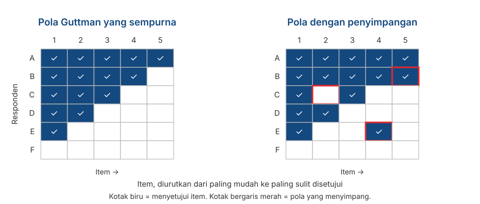

Format Respons I: Likert, Semantic Differential, dan Guttman
Penyusunan Skala Psikologi
2026-09-02
Outline
- Memilih format respons: Apa yang harus diperhatikan?
- Likert: asal-usulnya, dan 4️⃣ keputusan yang harus Anda ambil
- Semantic Differential: kapan pasangan kata sifat lebih tepat digunakan daripada pernyataan
- Guttman: ketika item memang berjenjang secara logis dan kenapa format ini jarang berhasil
- Membandingkan format Likert, Semantic Differential, dan Guttman
- Pertanyaan penutup: memilih format respons berkaitan dengan asumsi pengukuran yang mana?
Memilih format respon
Yang sudah Anda pelajari sebelumnya
Di Pertemuan 3, Anda sudah belajar model formalnya: \(X = T + E\), variabel laten sebagai sebab, dan reliabilitas sebagai proporsi varians.
Sampai di sini semuanya masih terasa sangat abstrak.
Format respons adalah lokasi pertama di mana teori pengukuran (yang abstrak) berubah menjadi sesuatu yang lebih konkrit dan terlihat di kuesioner.
Format respons bukan soal selera atau kebiasaan. Setiap format membawa asumsinya sendiri, dan asumsi-asumsi ini menentukan analisis apa yang nanti boleh Anda pakai.
Apa yang dilakukan sebuah format respons
Format respons adalah aturan yang memetakan kondisi psikologis internal partisipan menjadi sebuah angka.
Sebagian besar item terdiri atas dua bagian: stem (pernyataan atau pertanyaan) dan pilihan respons.
Yang Anda pilih ketika memilih format respons mencakup:
- berapa banyak informasi yang bisa diambil dari satu item,
- level pengukuran yang Anda klaim,
- jenis error yang mungkin muncul,
- dan analisis apa yang bisa dipertanggungjawabkan.
Likert
Asal-usulnya
Diperkenalkan Rensis Likert (1932) dalam disertasinya, A technique for the measurement of attitudes.
Gagasan intinya bukan pada opsi “Sangat Setuju sampai Sangat Tidak Setuju”, melainkan pada summated ratings: sekumpulan item yang direspons dengan skala berjenjang, lalu dijumlahkan menjadi satu skor.
Jadi yang disebut “skala” oleh Likert adalah kumpulan itemnya, bukan opsi responsnya.
Satu item tunggal dengan lima pilihan respon bukan “skala Likert”. Skala seperti ini adalah item bertipe Likert (Likert-type item).
Sebuah Likert scale baru berlaku kalau item-itemnya dijumlahkan. Perhatikan bahwa ini konsisten dengan Pertemuan 3: reliabilitas hanya bisa dihitung untuk sekumpulan item.
Anatomi item bertipe Likert
Stem: “Saya merasa gugup ketika harus berbicara di depan kelas.”
| 1 | 2 | 3 | 4 | 5 |
|---|---|---|---|---|
| Sangat Tidak Setuju | Tidak Setuju | Netral | Setuju | Sangat Setuju |
- Stem — pernyataan yang direspons.
- Jumlah titik — di sini lima.
- Label (anchor) — kata yang menerangkan tiap titik.
- Arah — dari negatif ke positif, atau sebaliknya.
Keempatnya adalah keputusan yang berbeda.
Keputusan 1️⃣: berapa pilihan respons?
- Empat pilihan atau kurang menekan variasi antar-responden dan menurunkan presisi.
- Preston & Colman (2000) melaporkan skala dua, tiga, dan empat pilihan membuat skala kurang presisi.
- Sekitar 5–7 pilihan adalah wilayah yang paling sering direkomendasikan.
- Lozano dkk. (2008) menyarankan rentang empat sampai tujuh, dengan tambahan keuntungan yang kecil di atas tujuh pilihan respon.
- Di atas 6–7 pilihan, tambahan performanya cenderung kecil.
- Simms dkk. (2019) menemukan hampir tidak ada perbaikan performa psikometrik ketika menyediakan di atas enam pilihan respon.
Dua pertimbangan lain dari DeVellis
Pertama, kemampuan responden membedakan. Kalau responden tidak sanggup membedakan tujuh pilihan respon, menyediakan tujuh pilihan hanya akan menambah noise.
Kedua, tujuan pengukuran yang Anda tetapkan sendiri. Kalau nanti skornya Anda kelompokkan menjadi tiga kategori, buat apa Anda menggunakan 10 pilihan respons?
Keputusan 2️⃣: pakai titik tengah atau tidak?
Jumlah ganjil
Memberi ruang untuk netral atau tidak yakin.
Cocok kalau posisi netral memang bermakna secara teoretis.
Jumlah genap
Memaksa responden memberikan pilihan, walaupun berbeda dengan kondisi mereka sebenarnya.
Cocok kalau Anda curiga netral akan dipakai partisipan untuk menghindar.
Tidak ada keputusan yang unggul secara absolut
DeVellis menyebutkan bahwa tidak ada format yang otomatis lebih baik. Pilihannya bergantung pada jenis pertanyaan, jenis opsi respons, dan tujuan penelitian Anda.
Masalah dengan titik tengah
Kalau setiap item punya pilihan di tengah, sebagian responden akan belajar bahwa mereka selalu bisa memilih pilihan tengah dan menyelesaikan kuesioner lebih cepat.
Pilihan tengah menjadi pilihan yang aman dan paling mudah, bukan laporan yang aktual tentang kondisi psikologis partisipan.
Krosnick (1991) menyebut pola ini satisficing: responden memberi jawaban yang “cukup memadai”, bukan jawaban yang paling akurat.
Ketika titik tengah tersedia, ia sering menjadi opsi yang paling banyak dipilih. Kalau itu terjadi pada data uji coba Anda di Pertemuan 12, jangan langsung menyimpulkan partisipannya memang kondisinya netral.
Netral ≠ ragu-ragu
Dalam banyak kuesioner berbahasa Indonesia, titik tengah diberi label “Netral”, “Ragu-ragu”, atau “Kurang Setuju”, seolah-olah ketiganya sama.
“Netral” berarti tidak condong ke mana pun. “Ragu-ragu” berarti tidak tahu atau belum yakin. “Kurang Setuju” sebenarnya sudah condong ke sisi tidak setuju.
Ketiganya menempati posisi yang berbeda pada kontinum, tetapi diberi angka yang sama, yaitu 3.
Apa efeknya?
Pemilihan istilah yang tidak sesuai (i.e., “netral” vs. “ragu-ragu” vs. “kurang setuju”) melanggar asumsi jarak yang setara dari Pertemuan 2. Kalau “Kurang Setuju” dipakai sebagai pilihan tengah, skala Anda sebenarnya tidak simetris: jarak dari 2 ke 3 tidak sama dengan jarak dari 3 ke 4.
Keputusan 3️⃣: melabeli semua pilihan, atau hanya ujungnya?
Melabeli semua pilihan umumnya menghasilkan reliabilitas dan validitas yang lebih baik daripada hanya melabeli kedua ujungnya (Krosnick, dkk., 2010).
Alasannya sederhana: kalau hanya ujungnya yang diberi label, tiap responden menafsirkan sendiri arti titik-titik di antaranya.
Tetapi label yang dipilih harus benar-benar dapat dibedakan oleh partisipan.
Contoh label yang bermasalah
Perhatikan susunan ini, yang diadaptasi dari DeVellis:
Sangat Membantu ➡️ Kurang Membantu ➡️ Agak Membantu ➡️ Tidak Membantu Sama Sekali
Masalahnya: “Agak” dan “Kurang” sulit dibedakan meskipun urutannya dibalik.
Keputusan 4️⃣: Anchor apa yang dipakai?
Persetujuan — “Sangat Tidak Setuju” sampai “Sangat Setuju”. Paling lazim, dan paling rawan acquiescence bias (Pertemuan 2).
Frekuensi — “Tidak pernah” sampai “Selalu”. Lebih konkret, tapi butuh rujukan waktu yang jelas: “sering” dalam seminggu atau dalam setahun?
Anchor khusus per item (item-specific) — misalnya “Seberapa sering Anda merasa gugup sebelum presentasi?” dengan pilihan “Tidak pernah | Sekali dua kali | Beberapa kali | Hampir tiap kali | Selalu”.
Penting diketahui
Anchor persetujuan mendorong responden untuk sekadar mengiyakan. Weijters dkk. (2010) memperkuat hal ini dengan menunjukkan bahwa format skala ikut menentukan response style yang muncul.
Seberapa kuat sebaiknya kalimat itemnya?
Tiga versi pernyataan yang isinya sama, dengan kekuatan berbeda:
- “Dosen umumnya mengabaikan apa yang dikatakan mahasiswa.” — kuat
- “Kadang-kadang dosen tidak memperhatikan komentar mahasiswa sebagaimana mestinya.” — sedang
- “Sesekali dosen mungkin lupa atau melewatkan sesuatu yang disampaikan mahasiswa.” — lemah
Saran DeVellis
Untuk format Likert, pernyataan sebaiknya cukup kuat, tetapi tidak terlalu ekstrem. Alasannya: derajatnya sudah diwakili oleh opsi responsnya.
Kalau kalimatnya sendiri sudah sangat lemah tonenya (versi 3), hampir semua orang akan setuju, dan item itu tidak lagi mampu membedakan siapa pun. Ingat pembahasan tingkat kesulitan item di Pertemuan 3.
Semantic Differential
Bentuknya
Dikembangkan Osgood, Suci, & Tannenbaum (1957) dalam penelitian tentang makna dan sikap.
Objek yang dinilai: Layanan Kemahasiswaan Fakultas
| 1 | 2 | 3 | 4 | 5 | 6 | 7 | ||
|---|---|---|---|---|---|---|---|---|
| Lambat | ○ | ○ | ○ | ○ | ○ | ○ | ○ | Cepat |
| Berbelit | ○ | ○ | ○ | ○ | ○ | ○ | ○ | Sederhana |
| Tidak ramah | ○ | ○ | ○ | ○ | ○ | ○ | ○ | Ramah |
Partisipan menandai satu titik di antara sepasang kata sifat yang berlawanan.
Bipolar dan unipolar
Pasangan bipolar
Dua kata sifat yang berlawanan.
jujur — tidak jujur ramah — galak
Pasangan unipolar
Ada dan tidak adanya satu atribut.
ramah — tidak ramah
Pilihan di antara keduanya harus mencerminkan logika konstruk Anda.
“Tidak ramah” belum tentu sama dengan “galak”. Kalau Anda memperlakukannya sebagai satu kontinum, Anda sudah membuat klaim teoretis.
Kapan format ini berguna
Ketika yang diukur adalah sikap atau kesan terhadap suatu objek — layanan, produk, program, kelompok, tokoh.
Ketika Anda ingin membandingkan beberapa objek pada dimensi yang sama.
Ketika beban kognitif perlu ditekan: pasangan kata sifat jauh lebih mudah direspon daripada deretan kalimat panjang.
Tetap cocok dengan model Pertemuan 3
Beberapa pasangan kata sifat yang mengukur hal yang sama: jujur/tidak jujur, adil/tidak adil, tulus/tidak tulus, bisa dijumlahkan menjadi satu skor “kejujuran”.
Logikanya persis sama: satu variabel laten sebagai penyebab beberapa item (shared cause), item-item sebagai indikatornya.
Yang perlu diwaspadai
Pasangan katanya harus benar-benar berlawanan dalam bahasa partisipan. Ini persoalan yang cukup pelik dalam bahasa Indonesia: banyak pasangan yang terasa berlawanan di bahasa Inggris tidak punya padanan yang setara.
Pilihan tengahnya ambigu. Apakah pilihan 4 berarti “netral”, “kedua-duanya”, atau “tidak tahu”?
Risiko invariance (Pertemuan 2): makna sepasang kata sifat bisa berbeda antar-kelompok, sehingga skornya tidak bisa langsung dibandingkan.
Kalau kelompok Anda memakai format ini
Uji pasangan kata sifatnya pada beberapa calon responden sebelum uji coba. Tanyakan satu hal sederhana: “Menurut Anda, apa lawan kata dari ini?” Kalau jawabannya bukan kata yang Anda pasangkan, pasangan kata tsb. perlu diganti.
Guttman
Gagasan kumulatif
Guttman (1944) mengusulkan skala yang itemnya berjenjang: menyetujui satu item berarti menyetujui semua item yang lebih “mudah”.
Level atribut seseorang ditunjukkan oleh item tersulit yang masih ia setujui.
Contoh dari DeVellis: “Apakah Anda merokok?” → “Apakah Anda merokok lebih dari 10 batang sehari?” → “Apakah Anda merokok lebih dari satu bungkus sehari?”
Perhatikan bedanya dengan Likert. Pada Likert, yang dijumlahkan adalah derajat persetujuan pada semua item. Pada Guttman, yang dicari adalah titik peralihan dari “ya” ke “tidak”.
Seperti apa polanya

Membaca pola
Pada pola yang sempurna, skor total sudah memberi tahu persis item mana saja yang disetujui. Tidak ada informasi yang hilang ketika kita meringkasnya menjadi satu angka.
Pada panel kanan, 3️⃣ responden menyimpang: ada yang menyetujui item yang sulit tetapi menolak item yang lebih mudah.
Semakin banyak penyimpangan, semakin kecil arti skor totalnya. Ukuran yang lazim dipakai untuk ini adalah coefficient of reproducibility.
Pada situasi seperti apa Skala Guttman berguna
Ketika hierarkinya merupakan konsekuensi logis: makan sepuluh mangkok bakso selalu berarti lebih banyak daripada lima mangkok.
Fungsi fisik: bisa bangun dari tempat tidur → bisa berjalan di dalam rumah → bisa naik tangga → bisa berjalan satu kilometer.
Jarak sosial (Bogardus, 1925): bersedia tinggal senegara → sekota → bertetangga → berteman dekat → menjadi keluarga lewat pernikahan.
Perhatikan bahwa ketiganya berhubungan dengan perilaku atau kemampuan yang konkret, bukan dengan sikap/konstruk psikologis yang sangat abstrak.
Guttman tidak cocok untuk konstruk abstrak
Begitu konstruknya tidak konkret, urutannya tidak lagi sama untuk semua orang.
Contoh dua item yang “mungkin” berjenjang
- Item 1: “Aktif di organisasi kemahasiswaan menunjukkan kemampuan manajemen waktu yang baik.”
- Item 2: “Kemampuan manajemen waktu yang baik tidak mengorbankan prestasi akademik.”
Dalam logika penjenjangan Guttman, menyetujui item 1 seharusnya berarti menyetujui item 2 juga.
Tetapi, bisa jadi ada partisipan yang percaya bahwa aktif di ormawa membuat mahasiswa punya kemampuan manajemen waktu yang baik tetapi sekaligus mengorbankan prestasi akademik, sehingga menyimpang dari pola urutan Guttman.
Asumsi bahwa semua item punya hubungan yang sama kuat dengan variabel laten tidak berlaku untuk item Guttman.
- Artinya, model parallel dan tau-equivalent dari Pertemuan 3 tidak cocok untuk skala Guttman, dan koefisien seperti Cronbach’s \(\alpha\) tidak bisa dipakai untuk skala Guttman.
Skala Guttman dapat dipakai pada konteks apa?
Kelemahan Guttman ada pada sifatnya yang deterministik: pola yang menyimpang dianggap kesalahan.
Item Response Theory mengambil gagasan yang sama tetapi membuatnya probabilistik: makin tinggi \(\theta\) (tingkat “variabel laten”) seseorang, makin besar peluangnya menyetujui item yang sulit.
Model IRT pada dasarnya adalah versi probabilistik dari model Guttman.
Membandingkan ketiganya
Ringkasan
| Likert | Semantic Differential | Guttman | |
|---|---|---|---|
| Bentuk item | Pernyataan + derajat persetujuan | Pasangan kata sifat | Pernyataan berjenjang, ya/tidak |
| Skor | Jumlah semua item | Jumlah semua pasangan | Titik peralihan |
| Cocok untuk | Sikap, keyakinan, sifat | Kesan terhadap objek | Perilaku/kemampuan berjenjang |
| Cocok dengan CTT | Ya | Ya | Tidak secara langsung |
| Kelemahan utama | Acquiescence, jarak tak setara | Padanan antonim, ambiguitas pilihan tengah | Penyimpangan pola |
Memilih format respons berarti memilih asumsi pengukuran
Likert mengasumsikan jarak antar-kategori setara, semua responden memaknai jangkar dengan cara yang sama, dan semua item berbobot sama.
Semantic Differential mengasumsikan pasangan kata sifatnya benar-benar bipolar, dan maknanya sama bagi semua responden.
Guttman mengasumsikan urutan kumulatif yang deterministik — asumsi yang paling sulit dipenuhi kalau dibandingkan dengan Likert dan Semantic Differential.
Aktivitas
Temukan masalah pada item di bawah ini
Empat format respons berikut punya masalah.
A. “Bagaimana pendapat Anda tentang layanan akademik fakultas?” Sangat Baik — Baik — Cukup — Kurang
B. “Seberapa sering Anda merasa cemas?” Tidak pernah — Jarang — Kadang-kadang — Sering — Selalu
C. “Saya merasa dosen kompeten dan peduli pada mahasiswa.” Sangat Tidak Setuju — Tidak Setuju — Netral — Setuju — Sangat Setuju
Rangkuman
Enam poin utama
Format respons bukan soal selera individual. Setiap format punya asumsinya sendiri.
“Skala Likert” berarti sekumpulan item yang dijumlahkan, bukan satu item dengan lima pilihan.
Sekitar 5–7 pilihan respon adalah strategi yang umum dipilih; di bawah 4 maka kita akan kehilangan informasi, di atas 7 tambahan manfaatnya kecil.
Pilihan tengah punya kelebihan dan kekurangan. Tidak ada format yang otomatis lebih baik, serta “netral”, “ragu-ragu”, serta “kurang setuju” bukan hal yang sama.
Semantic Differential memerlukan pasangan kata sifat yang benar-benar berlawanan dalam bahasa Indonesia.
Guttman memerlukan urutan kumulatif yang deterministik, sehingga jarang cocok untuk konstruk psikologis, tetapi ide dasarnya masih bisa dieksekusi dengan IRT.
Untuk Pertemuan 5
Kita lanjutkan ke format respons yang lebih jarang dipakai, tetapi punya kelebihan khusus:
- Thurstone — ketika item diberi bobot berbeda oleh panel ahli, sehingga tidak diperlakukan setara.
- Situational Judgement Test — ketika yang diukur adalah penilaian dalam situasi konkret.
- Forced-choice — ketika social desirability menjadi masalah utama, dan partisipan dipaksa memilih di antara dua hal yang sama-sama menarik.
Persiapan
Baca bagian Thurstone Scaling pada DeVellis & Thorpe (2022), Bab 5.
Ada pertanyaan❓

Catatan
- Paparan disusun dengan menggunakan dan Quarto dengan template dari UNAIR Theme.
- Kontak saya via amelia.zein@psikologi.unair.ac.id
Rujukan
Bogardus, E. S. (1925). Measuring social distances. Journal of Applied Sociology, 9, 299–308.
DeVellis, R. F., & Thorpe, C. T. (2022). Scale development: Theory and applications (5th ed.). SAGE.
Guttman, L. (1944). A basis for scaling qualitative data. American Sociological Review, 9(2), 139–150.
Krosnick, J. A. (1991). Response strategies for coping with the cognitive demands of attitude measures in surveys. Applied Cognitive Psychology, 5(3), 213–236.
Krosnick, J. A., & Presser, S. (2010). Question and questionnaire design. In P. V. Marsden & J. D. Wright (Eds.), Handbook of survey research (2nd ed., pp. 263–313). Emerald.
Likert, R. (1932). A technique for the measurement of attitudes. Archives of Psychology, 22(140), 1–55.
Lozano, L. M., García-Cueto, E., & Muñiz, J. (2008). Effect of the number of response categories on the reliability and validity of rating scales. Methodology, 4(2), 73–79.
Osgood, C. E., Suci, G. J., & Tannenbaum, P. H. (1957). The measurement of meaning. University of Illinois Press.
Preston, C. C., & Colman, A. M. (2000). Optimal number of response categories in rating scales. Acta Psychologica, 104(1), 1–15.
Simms, L. J., Zelazny, K., Williams, T. F., & Bernstein, L. (2019). Does the number of response options matter? Psychological Assessment, 31(4), 557–566.
Weijters, B., Cabooter, E., & Schillewaert, N. (2010). The effect of rating scale format on response styles. International Journal of Research in Marketing, 27(3), 236–247.